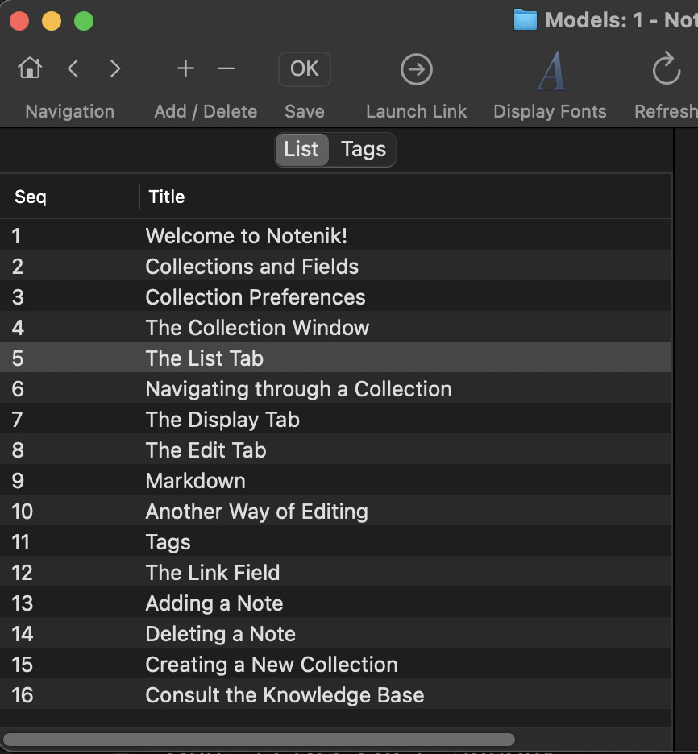

5 The List Tab
Beneath the Toolbar (which we’ll talk about later), you’ll see that the Collection window is divided into two sides. The left side shows all of the Notes in your Collection, while the right side focuses on one Note at a time.
Starting on the left side, you’ll see two tabs at the top, with the first one labeled List. This tab shows all of the Notes in your Collection, listed in a particular order.
If you look beneath the Collection menu, and then beneath the Sort menu, you’ll see a number of different options. This Intro Collection is sorted by Seq + Title, which is useful in order to maintain the Notes in a particular order. But you can choose any of the other available options (assuming that your particular Collection defines the fields to be used in the sort). When you select a different Sort order, then the List tab will immediately be reconfigured to reflect your choice.
Note that a number of different Sort options are available, but that the sorting is not infinitely configurable. You can’t, for example, simply click on a column heading to sort by that particular field. This is simply a design choice: one that makes Notenik more flexible than the typical note-taking application, but less flexible than a full-fledged database or spreadsheet app.
You’ll see that clicking on a row on the List tab will bring up the corresponding Note on the right.